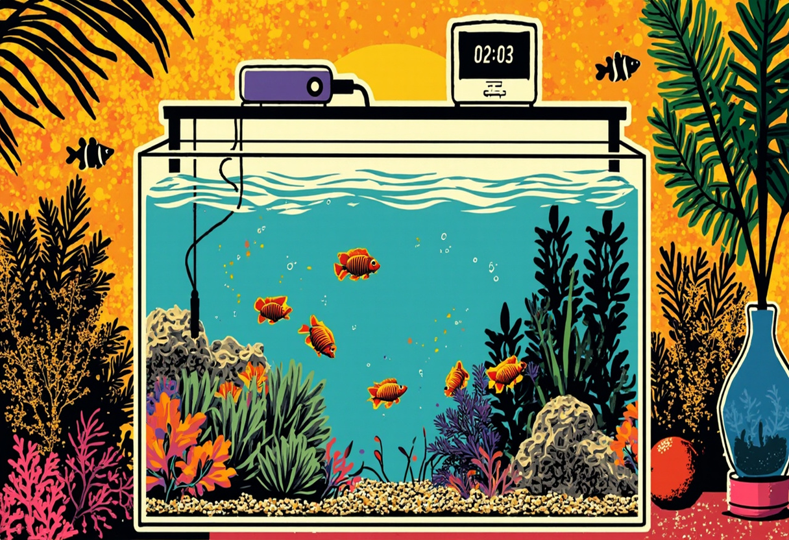

Urlaub und Aquarium – geht das überhaupt?
Die Vorfreude auf den wohlverdienten Urlaub ist groß – doch dann kommt der Gedanke: „Was wird aus meinem Aquarium? Wer füttert die Fische? Wer kontrolliert die Technik? Kann ich überhaupt verreisen?" Diese Fragen stellen sich unzählige Aquarianer jedes Jahr aufs Neue. Die gute Nachricht vorweg: Ja, du kannst bedenkenlos in den Urlaub fahren, ohne dass dein Aquarium leidet oder du dir ständig Sorgen machen musst. Der Schlüssel liegt in der richtigen Vorbereitung und den passenden technischen Helfern.
In diesem umfassenden Guide erfährst du, wie du dein Aquarium optimal auf deine Abwesenheit vorbereitest, welche Automatisierungslösungen es gibt und worauf du bei kurzen sowie langen Reisen achten musst. Von der automatischen Fütterung über die CO₂-Versorgung bis hin zum Notfallplan – wir haben alle wichtigen Aspekte für dich zusammengestellt. So kannst du deinen Urlaub entspannt genießen, während dein Aquarium unterwasserweit in besten Händen ist.
Vorbereitung: Das große Finale vor der Abreise
Eine gründliche Vorbereitung ist das A und O für eine sorgenfreie Urlaubszeit. Die letzte Woche vor deiner Abreise solltest du nutzen, um dein Aquarium in einen optimalen Zustand zu versetzen. Denn ein gut gepflegtes Becken verkraftet auch einmal ein paar Tage reduzierte Aufmerksamkeit deutlich besser als eines, das ohnehin schon am Limit läuft.
Großer Wasserwechsel
Führe zwei bis drei Tage vor der Abreise einen großzügigen Wasserwechsel von etwa 30–40 % durch. Frisches, sauberes Wasser senkt die Schadstoffbelastung und gibt dem Becken einen positiven „Puffer" für die Zeit deiner Abwesenheit. Kontrolliere dabei auch gleich die wichtigsten Wasserwerte (pH, KH, GH, Nitrit, Nitrat) und stelle sicher, dass alles im grünen Bereich ist.
Filterreinigung
Der Filter sollte kurz vor dem Urlaub gründlich, aber schonend gereinigt werden. Spüle das Filtermaterial in einem Eimer mit entnommenem Aquarienwasser aus – niemals unter fließendem Leitungswasser, denn das würde die nützlichen Bakterienkulturen abtöten. Eine frische, leistungsfähige Filterbiologie ist die beste Versicherung gegen Ammoniak- und Nitritspitzen während deiner Abwesenheit.
Pflanzenschnitt und Algenkontrolle
Schneide Pflanzen zurück, die zu stark wuchern, und entferne welke Blätter. Ein gepflegter Pflanzenbestand sorgt für eine bessere Wasserqualität und verhindert, dass absterbendes Pflanzenmaterial das Wasser belastet. Entferne auch sichtbare Algenbeläge von Scheiben, Dekoration und Technik. In den Tagen vor der Reise lohnt sich eine kurze Fastenperiode: Füttere deine Fische ab zwei Tage vor Abflug etwas reduzierter, damit das Becken „leer gefressen" ist und keine Futterreste zurückbleiben.
Automatische Futterautomaten: Die digitale Fütterung
Der Klassiker unter den Urlaubshelfern ist der automatische Futterautomat. Er gibt zu festgelegten Zeiten eine definierte Portion Futter ab und ersetzt so die tägliche Handfütterung. Moderne Geräte sind erstaunlich präzise und zuverlässig – vorausgesetzt, du wählst das richtige Modell und bereitest alles sorgfältig vor.
Welche Modelle gibt es?
Die Auswahl an Futterautomaten reicht von einfachen, mechanischen Drehtellergeräten bis hin zu smarten WLAN-gesteuerten High-End-Lösungen:
- Drehteller-Automaten: Das Futter wird in einem drehbaren Behälter bevorratet und zu den eingestellten Zeiten über eine Öffnung abgegeben. Klassiker wie der Eheim AutoFeed oder der JBL AutoFood sind bewährt, preiswert und für die meisten Flockenfutter geeignet.
- Schneckenförderer: Diese Modelle transportieren Granulat oder Pellets über eine drehende Schnecke nach außen. Sie sind besonders präzise und verstopfen seltener. Ein Vertreter ist der Sera Feed Automatic.
- Programmierbare Mehrfachbehälter: Geräte wie der FishMate Futterautomat verfügen über mehrere Kammern, die sich einzeln befüllen und programmieren lassen. Ideal, wenn du unterschiedliche Futtersorten oder genau dosierte Portionen benötigst.
- Smart-Automaten mit App-Steuerung: Die Luxusklasse unter den Futterautomaten. Per WLAN mit dem Heimnetz verbunden, lassen sie sich bequem per Smartphone steuern. Manche Modelle erlauben sogar eine manuelle Zusatzfütterung aus der Ferne. Ein Beispiel ist der Xiaomi Smart Pet Food Feeder.
Einstellung und Fallstricke
Die richtige Einstellung des Automaten ist entscheidend. Unser Tipp: Teste den Automaten bereits eine Woche vor Reiseantritt im normalen Betrieb. So stellst du sicher, dass die Portionsgröße stimmt und das Futter zuverlässig abgegeben wird. Wähle eher etwas weniger Futter als zu viel – die meisten Aquarienbewohner kommen mit einer leichten Unterversorgung deutlich besser zurecht als mit übermäßigen Futterresten, die das Wasser belasten. Achte zudem darauf, dass der Automat vor Feuchtigkeit geschützt ist. Hohe Luftfeuchtigkeit über dem Aquarium kann dazu führen, dass das Futter im Automaten verklumpt und die Mechanik blockiert.
Empfohlene Futterautomaten für die Urlaubszeit
Bewährter Drehteller-Automat mit einstellbaren Fütterungsintervallen. Einfach zu befüllen und zuverlässig im Betrieb. Ideal für Kurz- und Langzeiturlaube.
Vier separate Kammern für unterschiedliche Futtersorten oder Portionen. Leichte Programmierung und gleichmäßige Futterabgabe ohne Verstopfungsrisiko.
Smarte Fütterung per App aus der Ferne. Manuelle Zusatzfütterung via Smartphone möglich. Ideal für Vielverreiser mit anspruchsvollem Technikanspruch.
* Bei den mit Sternchen gekennzeichneten Links handelt es sich um Affiliate-Links. Wenn du über diese Links einkaufst, erhalten wir eine kleine Provision, ohne dass für dich zusätzliche Kosten entstehen. So unterstützt du unsere Arbeit.
Urlaubs-Futter: Langzeitfutter, Futterblöcke und Futterringe
Neben automatischen Futterautomaten gibt es eine Reihe von „analogen" Lösungen, die sich besonders für Kurzurlaube oder als Ergänzung zum Automaten eignen. Die Auswahl ist groß – und nicht jedes Produkt ist für jedes Aquarium gleichermaßen geeignet.
Langzeitfutter und Futterblöcke
Futterblöcke oder -tabletten geben über mehrere Tage hinweg kontinuierlich Nährstoffe ab. Sie bestehen aus gepressten Futtermitteln, die sich im Wasser langsam auflösen. Der Vorteil: Einmal ins Becken gelegt, musst du dich um nichts mehr kümmern. Der Nachteil: Die Freisetzungsrate ist nicht immer gleichmäßig, und bei wärmeren Temperaturen kann sich der Block schneller auflösen als vorgesehen. Zudem können größere Blöcke den Nährstoffeintrag überdosieren, wenn die Tiere gar nicht alles fressen. Setze Futterblöcke daher sparsam ein und wähle die Größe passend zu deinem Besatz und der geplanten Abwesenheitsdauer.
Futterringe und Urlaubssteine
Eine interessante Alternative sind Futterringe aus Gips oder Keramik, in die Trockenfutter eingearbeitet ist. Sie geben ihre Nährstoffe über mehrere Tage hinweg ab und sind vor allem für Bodenfische und Welse geeignet, die natürlicherweise an der Scheibe oder auf Steinen weiden. Achte darauf, dass die Ringe nicht zu groß sind – ein überdimensionierter Futterring kann die Wasserwerte unnötig belasten.
Was ist von Frostfutter-Herstellern zu halten?
Einige Hersteller bieten spezielle Urlaubsfutter in Gelform an, die ebenfalls über mehrere Tage haltbar sind. Diese Produkte sind meist hochwertiger als einfache Futterblöcke, aber auch teurer. Sie eignen sich gut als Ergänzung zum Futterautomaten, wenn du sicherstellen möchtest, dass auch scheue oder bodenorientierte Fische etwas abbekommen.
Unser Tipp: Kombiniere einen Futterautomaten für die Grundversorgung mit einem kleinen Futterblock oder -ring für die Bodenfische. So stellst du sicher, dass alle Beckenbewohner ausreichend versorgt werden, ohne dass ein Nährstoffüberschuss entsteht.
Beleuchtung automatisieren: Zeitschaltuhren und Smart-Home-Lösungen
Die Beleuchtung gehört zu den Bereichen, die sich am einfachsten automatisieren lassen – und das nicht nur für den Urlaub. Eine Zeitschaltuhr zwischen Steckdose und Leuchte sorgt dafür, dass der Tag-Nacht-Rhythmus auch ohne dein Zutun eingehalten wird. Für den Urlaub empfehlen wir, die Beleuchtungsdauer eher etwas zu reduzieren (6–7 Stunden statt 8–10). Weniger Licht bedeutet weniger Algenwachstum und eine geringere Belastung des Ökosystems.
Mechanische Zeitschaltuhren
Die günstigste und einfachste Lösung. Eine mechanische oder digitale Zeitschaltuhr kostet nur wenige Euro und lässt sich intuitiv programmieren. Nachteil: Bei Stromausfall verstellt sich die Uhrzeit und der Rhythmus ist durcheinander. Für eine einwöchige Reise ist das Risiko aber gering.
Smart-Home-Steckdosen
Moderne WLAN-Steckdosen (z. B. von TP-Link Kasa, AVM Fritz!DECT oder Bosch Smart Home) bieten deutlich mehr Komfort. Sie lassen sich per App steuern, ermöglichen auch unterwegs eine manuelle Anpassung und verfügen oft über Timer-Funktionen mit Sonnenaufgangs-Simulation. Selbst bei Stromausfall bleiben die Einstellungen gespeichert. Ein weiterer Vorteil: Du kannst die Beleuchtung auch aus dem Urlaub heraus ein- oder ausschalten, falls dir einfällt, dass du etwas vergessen hast.
Empfohlenes Zubehör für Lichtautomation
Programmierbare Zeitschaltuhr mit mehreren Schaltzeiten pro Tag. Ideal zur Steuerung der Aquarienbeleuchtung während der Urlaubszeit.
Per App steuerbar, Timer-Funktion und Energieverbrauchsmessung. Schalte deine Aquarienbeleuchtung von unterwegs ein oder aus.
* Bei den mit Sternchen gekennzeichneten Links handelt es sich um Affiliate-Links. Wenn du über diese Links einkaufst, erhalten wir eine kleine Provision, ohne dass für dich zusätzliche Kosten entstehen. So unterstützt du unsere Arbeit.
CO₂-Versorgung im Urlaub: Abschalten oder weiterlaufen lassen?
Diese Frage beschäftigt viele Aquarianer mit Pflanzenbecken. Die kurze Antwort: Für die Urlaubszeit solltest du die CO₂-Versorgung in den meisten Fällen abschalten oder zumindest stark reduzieren. Der Grund: Pflanzen verbrauchen bei reduzierter Lichtdauer (wie oben empfohlen) weniger CO₂. Eine unveränderte CO₂-Dosierung könnte zu einer Übersäuerung des Wassers führen, was besonders für Fische und Wirbellose gefährlich ist.
Wenn du keinen pH-Controller verwendest, der die CO₂-Zufuhr automatisch regelt, empfehlen wir folgende Strategie:
- Kurzurlaub (2–4 Tage): Schalte die CO₂-Anlage einfach für die gesamte Zeit aus. Die Pflanzen kommen ohne zusätzliche CO₂-Düngung einige Tage gut aus, da der natürliche CO₂-Eintrag über die Wasseroberfläche ausreicht.
- Langzeiturlaub (1–3 Wochen): Reduziere die CO₂-Dosierung auf etwa 50 % der normalen Menge oder schalte sie ebenfalls komplett ab. Besonders bei dicht bepflanzten Becken kann eine vollständige Abschaltung sinnvoll sein, um das Risiko von pH-Schwankungen zu minimieren.
Falls du einen pH-Controller besitzt, kannst du die CO₂-Anlage bedenkenlos weiterlaufen lassen – der Controller regelt die Dosierung automatisch nach. Überprüfe vor der Abreise noch einmal die Kalibrierung der pH-Sonde und stelle sicher, dass der CO₂-Vorrat für die gesamte Dauer deiner Abwesenheit reicht.
Wasserverdunstung: Nachfüllsysteme und Osmoseanlagen
Wasserverdunstung ist ein natürlicher Prozess, der in jedem Aquarium stattfindet. Im Urlaub – besonders bei längerer Abwesenheit – kann der sinkende Wasserstand jedoch zum Problem werden. Fällt der Pegel zu stark ab, können Heizung und Filter Schaden nehmen oder die Strömungspumpe läuft trocken.
Abdeckung reduzieren Verdunstung
Die einfachste Maßnahme: Eine geschlossene Abdeckung oder eine Glasscheibe auf dem Becken reduziert die Verdunstung um bis zu 50 %. Kontrolliere vor der Abreise, ob die Abdeckung sauber und vollständig schließt. Bei offenen Becken (Cubes, Aquascaping ohne Abdeckung) ist die Verdunstung naturgemäß höher – hier sind automatische Nachfüllsysteme besonders empfehlenswert.
Automatische Nachfüllsysteme
Für Aquarianer, die häufig oder länger verreisen, sind automatische Nachfüllsysteme (auch „Auto Top-Off" oder ATO genannt) eine hervorragende Investition. Sie bestehen aus einem Vorratsbehälter mit Osmose- oder Leitungswasser, einem Schwimmerschalter oder Sensor und einer kleinen Pumpe. Sinkt der Wasserstand unter einen definierten Wert, pumpt das System automatisch Wasser nach. Das hält den Wasserstand konstant und schützt die Technik.
Bekannte Systeme wie der Tunze Osmolator oder der Aquadur ATO sind im Fachhandel erhältlich. Wer es günstiger mag, kann auch ein einfaches Ventil mit Schwimmer verwenden, das an den Osmoseschlauch angeschlossen wird – allerdings nur mit ausreichendem Überlaufschutz!
Osmoseanlage mit Vorratstank
Wenn du ohnehin eine Osmoseanlage besitzt, kannst du vor der Abreise einen größeren Vorrat an Osmosewasser ansetzen (20–50 Liter, je nach Beckengröße). Das Wasser wird für einen eventuell notwendigen Wasserwechsel durch einen Sitter oder für die Nachbefüllung des Verdunstungsausgleichs benötigt. Ein praktischer Tipp: Fülle den Osmosewasservorrat in saubere Kanister und beschrifte sie deutlich.
Kurzurlaub (2–4 Tage) vs. Langzeiturlaub (1–3 Wochen): Unterschiedliche Strategien
Nicht jeder Urlaub ist gleich lang, und entsprechend unterschiedlich fallen die Vorbereitungen aus. Wir unterscheiden zwischen Kurz- und Langzeiturlaub, denn die Anforderungen an die Urlaubsbetreuung unterscheiden sich erheblich.
Strategie für den Kurzurlaub (2–4 Tage)
Gute Nachricht: Ein verlängertes Wochenende oder eine kurze Geschäftsreise sind für dein Aquarium so gut wie kein Problem. Die meisten gesunden Aquarien verkraften 2–4 Tage ohne Fütterung problemlos. Deine Vorbereitungs-Checkliste für den Kurzurlaub:
- ✔ Wasserwechsel und Filterreinigung wie gewohnt durchführen
- ✔ Fische zwei Tage vor Abreise etwas reduziert füttern
- ✔ CO₂-Anlage abschalten (bei Kurzurlaub nicht zwingend nötig, aber sicherer)
- ✔ Beleuchtungszeit per Zeitschaltuhr leicht reduzieren
- ✔ Aquarium abdecken, um Verdunstung zu minimieren
- ✔ Heizung auf korrekte Temperatur prüfen
Ein Futterautomat oder ein kleiner Futterblock sind für diese kurze Zeitspanne in der Regel nicht nötig. Die Tiere kommen mit einer mehrtägigen Futterpause gut zurecht – in der Natur haben sie schließlich auch nicht jeden Tag reichlich Nahrung.
Strategie für den Langzeiturlaub (1–3 Wochen)
Bei längeren Reisen ist eine gründliche Planung unerlässlich. Hier kommt die gesamte Palette der Urlaubsbetreuung zum Einsatz:
- ✔ Futterautomat mit ausreichender Füllung und vorherigem Testlauf installieren
- ✔ Alternativ: Hochwertige Langzeitfutterblöcke oder Futterringe für die Grundversorgung
- ✔ CO₂-Anlage entweder abschalten oder mit pH-Controller weiterlaufen lassen
- ✔ Zeitschaltuhr für Beleuchtung programmieren (6–7 Stunden Licht pro Tag)
- ✔ Automatisches Nachfüllsystem oder ausreichend großen Vorratstank installieren
- ✔ Heizungsfunktion prüfen und bei Sommerhitze Kühlungsmöglichkeiten vorsehen
- ✔ Notfallplan mit einer Vertrauensperson besprechen (siehe nächster Abschnitt)
Bei Abwesenheiten von mehr als zwei Wochen ist zusätzlich ein Aquarien-Sitter empfehlenswert, der einmal wöchentlich nach dem Rechten sieht (siehe Notfallplan).
Notfallplan: Nachbarn, Aquarien-Sitter und Checkliste für die Vertretung
Egal wie gut du dein Aquarium vorbereitest – es kannimmer etwas Unvorhergesehenes passieren: ein Stromausfall, eine defekte Pumpe oder ein plötzlicher Temperatursturz. Ein durchdachter Notfallplan gibt dir und deinem Aquarium die nötige Sicherheit.
Den richtigen Aquarien-Sitter finden
Der beste Sitter ist ein aquaristikbegeisterter Freund oder Nachbar, der sich mit der Technik auskennt. Fehlt diese Option, kannst du auch einen weniger erfahrenen Sitter einweisen – dafür sollte die Einweisung jedoch gründlich und schriftlich erfolgen. In vielen Städten gibt es inzwischen auch professionelle Aquarienbetreuungsdienste, die gegen Gebühr regelmäßig nach dem Rechten sehen. Frage in deinem Fachgeschäft oder in Aquaristik-Foren nach Empfehlungen.
Die schriftliche Checkliste für die Vertretung
Überlasse nichts dem Zufall. Erstelle eine detaillierte Checkliste, die dein Sitter abarbeiten kann. Diese sollte mindestens folgende Punkte enthalten:
- Notruf: Deine Urlaubs-Telefonnummer, E-Mail und ggf. die Nummer des nächsten Aquaristik-Fachgeschäfts
- Standort der Technik: Wo befinden sich Filter, Heizung, CO₂-Anlage, Zeitschaltuhren und Sicherungen? Wie schaltet man sie im Notfall aus?
- Tägliche Kontrolle: Kurzer Blick auf die Fische (verhalten sie sich normal?), Temperaturcheck, Kontrolle auf ungewöhnliche Geräusche oder Gerüche
- Fütterung: Wo ist das Futter deponiert? Wie wird der Automat bedient? Nur im absoluten Notfall per Hand füttern (mit genauer Mengenangabe!).
- Wasserstand: Bis zu welcher Marke darf der Wasserstand fallen? Wo befindet sich das Nachfüllwasser?
- Stromausfall: Was tun bei längerem Stromausfall? Hinweis auf Notstromversorgung (falls vorhanden) oder Maßnahmen zur Sauerstoffanreicherung (Batteriebelüfter).
Hinterlege der Checkliste am besten ein Foto deines Aquariums im Normalzustand – so kann der Sitter Abweichungen leichter erkennen.
Der Nachbar als erster Helfer
Gib einem vertrauenswürdigen Nachbarn einen Schlüssel und weise ihn kurz in die Grundlagen ein. Oft reicht es schon, wenn jemand einmal täglich kurz nach dem Aquarium sieht und bei offensichtlichen Problemen (z. B. laute Geräusche der Pumpe, starker Wasserverlust) reagieren kann. Hinterlege einen Umschlag mit den wichtigsten Infos und einem kurzen Leitfaden am Becken.
Temperatur: Heizungs-Check, Hitzewelle-Vorsorge und Kühlung im Sommer
Die Wassertemperatur ist einer der kritischsten Faktoren während deiner Abwesenheit. Ein Heizungsausfall im Winter oder eine Hitzewelle im Sommer können innerhalb weniger Stunden fatale Folgen haben. Mit den richtigen Vorkehrungen bist du auf beiden Seiten gewappnet.
Heizungs-Check vor der Abreise
Überprüfe vor jedem Urlaub die Funktionstüchtigkeit deiner Heizung. Stelle den Sollwert ein (für die meisten tropischen Aquarien 24–26 °C) und beobachte, ob die Heizung tatsächlich ein- und ausschaltet. Ein moderner Heizstab mit getrenntem Thermostat (z. B. JBL ProTemp oder Eheim Thermocontrol) bietet die höchste Ausfallsicherheit. Ältere Glasheizungen solltest du vor der Reise gegen ein zuverlässigeres Modell austauschen. Für zusätzliche Sicherheit sorgt ein zweiter, parallel geschalteter Heizstab mit etwas niedrigerer Solltemperatur – fällt einer aus, springt der andere ein.
Hitzewelle-Vorsorge im Sommer
Steht deine Reise in den Hochsommer, kann die Wassertemperatur im Aquarium schnell auf kritische Werte über 30 °C steigen. Hohe Temperaturen bedeuten Sauerstoffmangel und enormen Stress für die Tiere. Unsere Tipps für die heiße Jahreszeit:
- Standort prüfen: Steht das Aquarium in einem Raum mit direkter Sonneneinstrahlung? Ziehe vor der Abreise Vorhänge oder Jalousien zu.
- Lüftung nutzen: Ein Ventilator, der über die Wasseroberfläche bläst, senkt die Temperatur um 2–4 °C durch Verdunstungskälte. Kombiniere ihn mit einer Zeitschaltuhr oder einem Thermostat-Adapter.
- Kühlung per Lüfter: Spezielle Aquarien-Lüfter (z. B. von JBL oder Tunze) werden am Beckenrand montiert und kühlen das Wasser effektiv. Sie sollten ebenfalls über eine Zeitschaltuhr laufen, um nachts nicht unnötig zu kühlen.
- Notkühlung: Lege für den Notfall ein paar gefrorene Wasserflaschen bereit, die der Sitter bei extremer Hitze ins Becken hängen kann (natürlich nur in Absprache mit dir).
- Heizung ausschalten: Klingt logisch, wird aber oft vergessen: Schalte die Heizung im Sommer komplett aus, wenn die Raumtemperatur ohnehin über der Solltemperatur liegt.
Empfohlenes Zubehör für Temperatur-Management
Zuverlässige Temperaturregelung mit Edelstahl-Heizwendel. Besonders langlebig und genau – die ideale Wahl für die urlaubssichere Beheizung.
Effektive Kühlung durch Verdunstung. Leise, energiesparend und einfach am Beckenrand zu montieren. Ideal für heiße Sommertage.
Zeigt die Wassertemperatur permanent an und alarmiert bei Über- oder Unterschreitung der eingestellten Grenzwerte. Mit Max/Min-Speicherfunktion.
* Bei den mit Sternchen gekennzeichneten Links handelt es sich um Affiliate-Links. Wenn du über diese Links einkaufst, erhalten wir eine kleine Provision, ohne dass für dich zusätzliche Kosten entstehen. So unterstützt du unsere Arbeit.
Fazit: Mit guter Planung entspannt verreisen
Ein Aquarium ist kein Grund, auf den wohlverdienten Urlaub zu verzichten. Mit der richtigen Vorbereitung, den passenden technischen Helfern und einem durchdachten Notfallplan wird die Zeit deiner Abwesenheit für dein Becken zur unspektakulären Routine – und für dich zur echten Erholung. Die Investition in einen zuverlässigen Futterautomaten, eine Zeitschaltuhr für die Beleuchtung und ein paar wenige Vorkehrungen bei der CO₂-Versorgung und Temperatur zahlt sich durch ein entspanntes Reisegefühl mehrfach aus.
Denke immer daran: Die meisten Aquarienbewohner kommen mit einer kurzen Futterpause deutlich besser zurecht als mit Überfütterung. Lieber etwas weniger Vorsorge als zu viel. Und wenn du unsicher bist, investiere in einen zweiten Heizstab, einen batteriebetriebenen Belüfter als Notfall-Reserve oder einen professionellen Aquarien-Sitter – das beruhigt ungemein.
Unser wichtigster Tipp für entspanntes Reisen: Teste alle automatischen Systeme (Futterautomat, Zeitschaltuhr, Nachfüllsystem) mindestens eine Woche vor Abreise im Echtbetrieb. Dann kannst du sicher sein, dass alles reibungslos funktioniert, wenn du deinen Koffer packst. Und wenn du dann am Strand liegst, musst du nur noch an eines denken: an die schöne Zeit – nicht an dein Aquarium.
Gute Reise und entspanntes Tauchen – sowohl im Urlaub als auch zu Hause in deinem Aquarium! 🌊🐟
Dieser Guide wurde zuletzt aktualisiert am 4. Juni 2026. Die Amazon-Preise und Verfügbarkeiten können abweichen. Wir empfehlen, vor dem Kauf die aktuellen Produktinformationen auf Amazon zu prüfen.